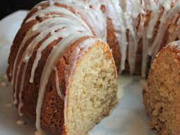

A long bake results in an amazing treat!
"To make this cake, first make a homemade caramel sauce which you then incorporate into the batter and use as a topping! You'll probably have extra sauce; but no worries—it's great on ice cream. too!"
Ingredients
Caramel Sauce:
- 1 cup heavy whipping cream
- 5 tablespoons unsalted butter
- 2 teaspoons vanilla extract
- ¼ teaspoon salt
- 1 ½ cups white sugar
- ¼ cup light corn syrup
- ¼ cup water
Cake:
- 3 cups all-purpose flour
- 1 teaspoon baking powder
- 1 teaspoon baking soda
- 1 teaspoon ground cinnamon
- ¾ teaspoon salt
- ½ teaspoon ground nutmeg
- 1 cup firmly packed brown sugar
- ¾ cup unsalted butter, softened
- ½ cup white sugar
- 4 large eggs, at room temperature
- ¾ cup unsweetened applesauce
- ½ cup sour cream, at room temperature
- 2 teaspoons vanilla extract
- 3 cups Granny Smith apples - peeled, cored, and diced
Steps
- Combine heavy cream, butter, vanilla, and salt for caramel sauce in a small saucepan. Cook over medium-low heat until butter is melted and mixture begins to bubble, about 5 minutes. Remove from heat and keep warm.
- Combine sugar, corn syrup, and water in a large, light-colored saucepan with high sides. Cook over medium heat, swirling occasionally, until mixture is amber in color, 15 to 20 minutes. Reduce heat to low, and very carefully whisk in reserved cream-butter mixture; stir constantly as caramel mixture will bubble up and steam. Continue cooking over low heat, stirring occasionally, for 5 more minutes. Remove from heat. Set out 1/2 cup of caramel sauce for the cake, and reserve the remainder for the topping. Allow to cool to room temperature.
- Preheat the oven to 350 degrees F (175 degrees C). Grease and flour a 10-cup Bundt® pan.
- Prepare cake: Whisk together flour, baking powder, baking soda, cinnamon, salt, and nutmeg in a bowl until combined.
- Beat together brown sugar, butter, and white sugar in a large bowl until light and fluffy. Beat in eggs, 1 at time, mixing well after each addition. Mix in applesauce, sour cream, reserved 1/2 cup caramel sauce, and vanilla until thoroughly combined. Add in 1/2 of the flour mixture, and mix until just combined. Mix in remaining flour mixture until just combined. Fold in diced apples. Pour batter into the prepared Bundt® pan and smooth into an even layer.
- Bake in the preheated oven until a bamboo skewer inserted into the cake comes out with a just few moist crumbs, 55 to 60 minutes. Allow cake to cool in the pan for 30 minutes. Gently run a knife around the edge to loosen and remove cake to a wire rack and cool completely, 15 to 30 more minutes.
- Just before serving, pour remaining caramel sauce over the top of the cake. If needed, reheat the caramel slightly to make it a pourable consistency.
Return to top
Return to main page